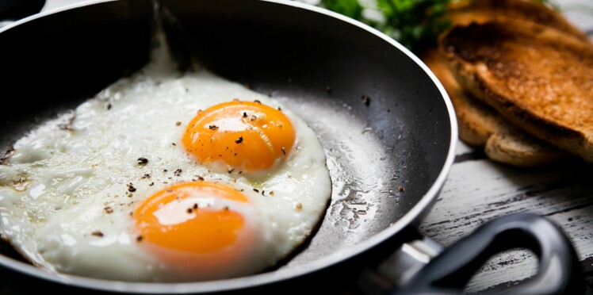

Oeuf au plat

Description
Un œuf au plat ou œuf sur le plat, proche de œuf miroir, est un œuf, généralement de poule,
sur un plat, une poêle ou sur une plaque préalablement chauffée et beurrée ou huilée.
Ingrédients
- 4 Oeufs bien frais
- 15g Beurre
- Sel
- Poivre
Préparation :
- Faites fondre le beurre dans une poêle à feu moyen.
- Cassez délicatement les oeufs dans la poêle en prenant soin de ne pas crever le jaune. Salez et poivrez.
- Laissez cuire 2 à 3 min selon votre goût à feu moyen/vif : le jaune doit rester coulant et le blanc être frit.
- Servez immédiatement.